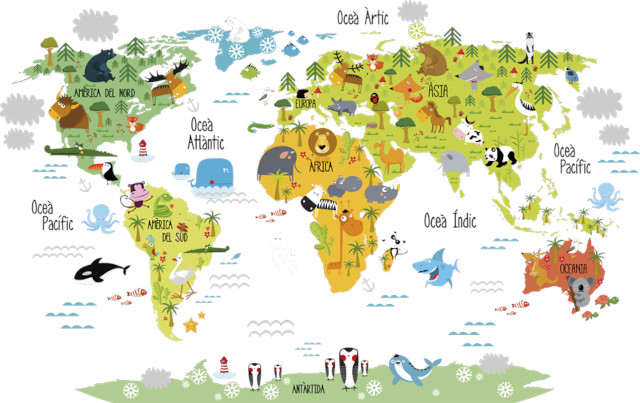
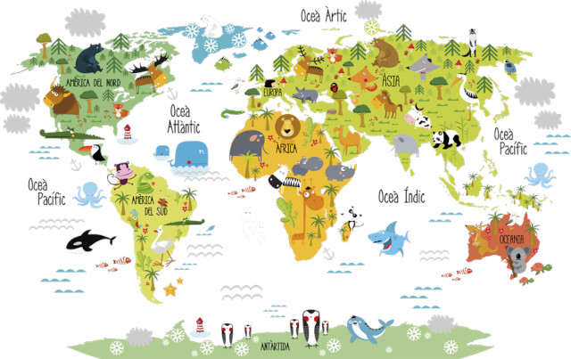

Fauna- co to takiego?
fauna «ogół gatunków zwierząt charakterystycznych dla danego obszaru, środowiska lub okresu geologicznego»Fauna to wszystkie zwierzęta żyjące na danym obszarze, w danym środowisku lub charakterystyczne dla wybranego okresu geologicznego. Możemy mówić o faunie Polski, faunie puszczy, faunie jeziora czy też faunie ordowiku lub kambru. Mianem fauny kopalnej określamy zaś skamieniałości zwierząt.
Zwierzeta a fauna:
Pojęcie „zwierzęta” (łac. animalia) należy odróżnić od omawianego tu pojęcia „fauna”. Zwierzęta w ogóle, pojmowane jako królestwo, to ogół organizmów zwierzęcych, rozpatrywanych niezależnie od obszaru występowania czy ekosystemu. Fauna określa zaś bardzo konkretnie, że chodzi o zwierzęta danego obszaru geograficznego (lub typu np., fauna lasów tropikalnych), okresu lub ekosystemu. Odnosi się do wszystkich gatunków zwierząt, żyjących na interesującym nas obszarze. Sprowadza się do ich charakterystyki, określenia zależności międzygatunkowych oraz analizy struktury, jaką tworzą w danym ekosystemie. W tym kontekście możemy mówić zarówno o faunie Europy, Polski, jak i wybranego wycinka terenu np. rezerwatu, lasu czy parku narodowego.

